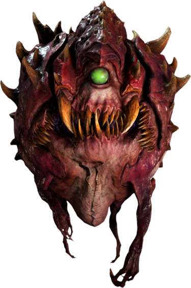

After building a few scale models over the past few years, I took some interest in a more paint-centered variation of the hobby: Miniature painting.
I have had some interest in painting models from games like Warhammer, Battletech, and Star Wars Legion. Still, I wanted to test my skills with a more budget friendly miniature.
After looking at a bunch of miniatures at my local hobby store, the Rockmaw from Bones caught my attention. Looking back at it, I think it was the simplicity of the figure along with its subtle details. In addition, I had in mind some techniques to apply to this model that I learned with a few online tutorials I watched before heading to the hobby store.
Even though the mini was under \$5.00 US Dollars, I paid more than \$50.00 if I also count the miniature size brushes (The Army Painter's Wargamer Small Drybrush, Regiment Brush, and Insane Detail Brush) and new paints (list below).
After spending a solid half an hour picking a mini, I realized that I picked a mini without a reference picture. For the first time I had complete liberty and control as to what colors to use and how to use them (Contrary to Gundams, for instance, where you usually follow the painted pictures).
After a few minutes walking in circles, I had the idea of painting this Rockmaw like the Cacodemons from Doom (2016):
It was then clear that I needed some reds, some sort of green, and bone-tone colors. Here's the list of paints I bought for this model: